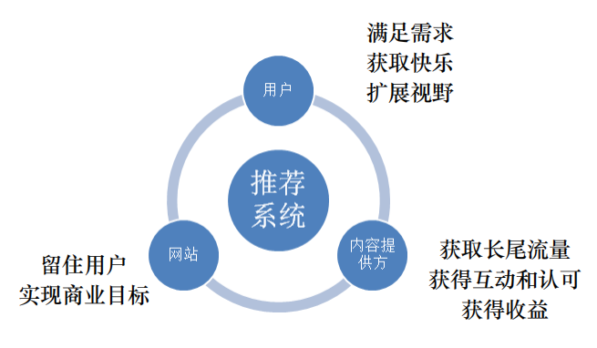

1.5 推荐系统评估
学习目标
- 了解推荐系统的常用评估指标
- 了解推荐系统的评估方法
1 推荐系统的评估指标
- 好的推荐系统可以实现用户, 服务提供方, 内容提供方的共赢

评估数据来源显示反馈和隐式反馈
显式反馈 隐式反馈 例子 电影/书籍评分 是否喜欢这个推荐 播放/点击 评论 下载 购买 准确性 高 低 数量 少 多 获取成本 高 低 常用评估指标
• 准确性 • 信任度 • 满意度 • 实时性 • 覆盖率 • 鲁棒性 • 多样性 • 可扩展性 • 新颖性 • 商业⽬标 • 惊喜度 • ⽤户留存
- 准确性 (理论角度) Netflix 美国录像带租赁
- 评分预测
- RMSE MAE
- topN推荐
- 召回率 精准率
- 评分预测
- 准确性 (业务角度)

- 覆盖度
- 信息熵 对于推荐越大越好
- 覆盖率
- 多样性&新颖性&惊喜性
- 多样性：推荐列表中两两物品的不相似性。（相似性如何度量？
- 新颖性：未曾关注的类别、作者；推荐结果的平均流⾏度
- 惊喜性：历史不相似（惊）但很满意（喜）
- 往往需要牺牲准确性
- 使⽤历史⾏为预测⽤户对某个物品的喜爱程度
- 系统过度强调实时性
- Exploitation & Exploration 探索与利用问题
- Exploitation(开发 利用)：选择现在可能最佳的⽅案
- Exploration(探测 搜索)：选择现在不确定的⼀些⽅案，但未来可能会有⾼收益的⽅案
- 在做两类决策的过程中，不断更新对所有决策的不确定性的认知，优化 长期的⽬标
- EE问题实践
- 兴趣扩展: 相似话题, 搭配推荐
- 人群算法: userCF 用户聚类
- 平衡个性化推荐和热门推荐比例
- 随机丢弃用户行为历史
- 随机扰动模型参数
- EE可能带来的问题
- 探索伤害用户体验, 可能导致用户流失
- 探索带来的长期收益(留存率)评估周期长, KPI压力大
- 如何平衡实时兴趣和长期兴趣
- 如何平衡短期产品体验和长期系统生态
- 如何平衡大众口味和小众需求
- 准确性 (理论角度) Netflix 美国录像带租赁
2 推荐系统评估方法
- 评估方法
- 问卷调查: 成本高
- 离线评估:
- 只能在用户看到过的候选集上做评估, 且跟线上真实效果存在偏差
- 只能评估少数指标
- 速度快, 不损害用户体验
- 在线评估: 灰度发布 & A/B测试 50% 全量上线
- 实践: 离线评估和在线评估结合, 定期做问卷调查